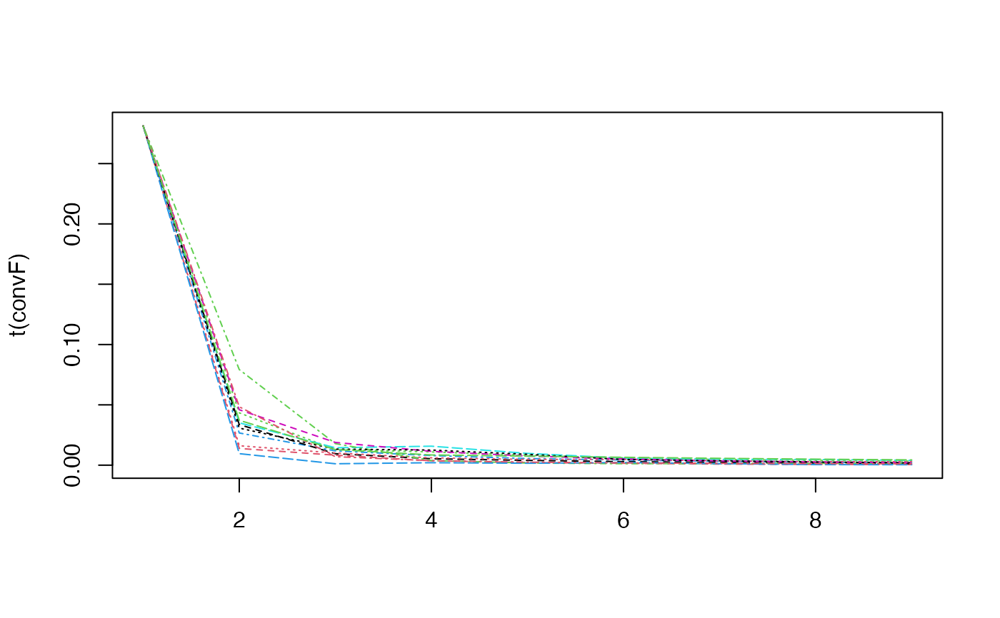
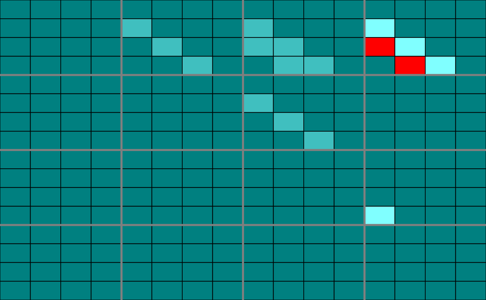
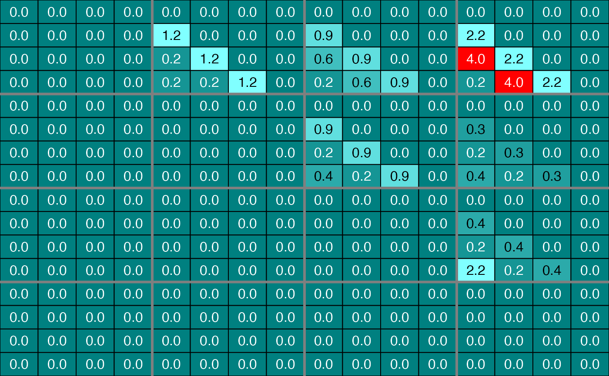
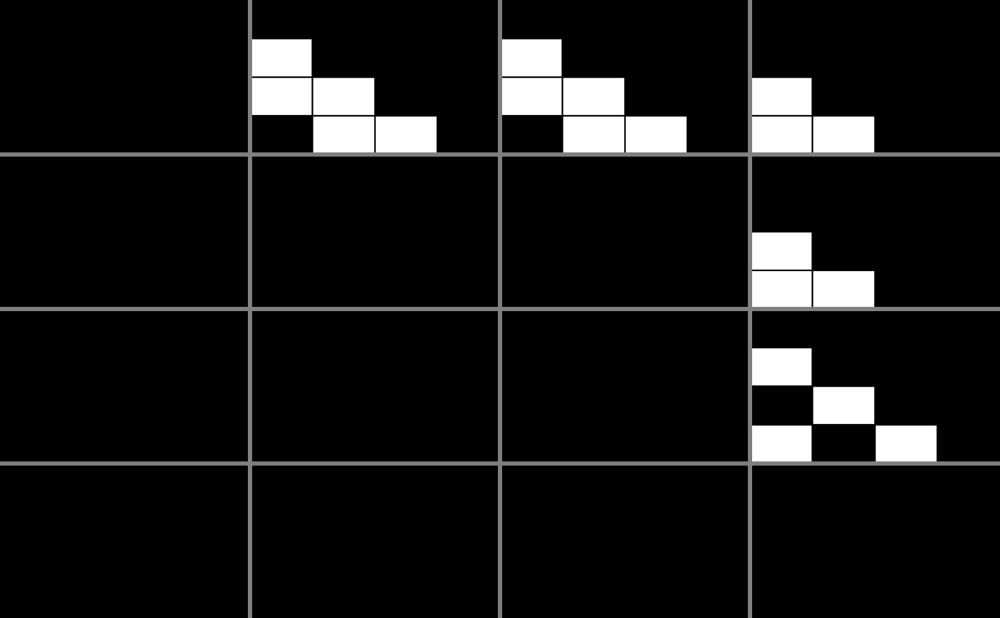

Reverse-engineer the network.
# S4 method for omics_array
inference(
M,
tour.max = 30,
g = function(x) {
1/x
},
conv = 0.001,
cv.subjects = TRUE,
nb.folds = NULL,
eps = 10^-5,
type.inf = "iterative",
Fshape = NULL,
Finit = NULL,
Omega = NULL,
fitfun = "LASSO",
use.Gram = TRUE,
error.stabsel = 0.05,
pi_thr.stabsel = 0.6,
priors = NULL,
mc.cores = getOption("mc.cores", 2L),
intercept.stabpath = TRUE,
steps.seq = 0.95,
limselect = 0.95,
use.parallel = TRUE,
verbose = TRUE,
show.error.messages = FALSE
)a omics_array object.
[30] tour.max + 1 = maximal number of steps.
After each step, the new solution is choosen as (the old solution + g(x) * the new solution)/(1+g(x)) where x is the number of steps. Defaults to `g=function(x) 1/x`
[0.001] Convergence criterion.
[TRUE] Subjectwise cross validation: should the cross validation be done by removing the subject one by one?
[NULL] Relevant only if no subjectwise cross validation (i.e. cv.subjects=FALSE). The number of folds in cross validation.
[10^-5] Threshold for rounding coefficients to 0 (i.e. machine zero).
["iterative"] "iterative" or "noniterative" : should the algorithm be computed iteratively or only for one step? For highly homogeneous clusters, the "noniterative" option is suffisant.
[NULL] Shape of the F matrix.
[NULL] Init values of the F matrix.
[NULL] Init values for the Omega matrix.
["LASSO"] Function to infer the Omega matrix at each step.
[TRUE] Optional parameter for the lasso in the `lars` package.
[0.05] Optional parameter for the stability selection algorithm in the `c060` package.
[0.6] Optional parameter for the stability selection algorithm in the `c060` package.
[NULL] A priori weights for the links between the actors. 0 means that an actor is always included in the predictive model, 1 is a neutral weighting and +infinity that the actor is never used in the model. For a given predictive model, the weighting vector is normalized so that its sum is equal to the number of predictors in the model.
[getOption("mc.cores", 2L)] Number of cores.
[TRUE] Use intercept in stability selection models?
[.95] Optional parameter for the SelectBoost algorithm in the `SelectBoost` package.
[.95] Optional parameter for the SelectBoost algorithm in the `SelectBoost` package.
[TRUE] Use parallel computing?
[TRUE] Info on the completion of the fitting process
[FALSE] Should the error messages of the Omega estimating function be returned?
A omics_network object.
The fitting built-in fitting functions (`fitfun`) provided with the `Patterns` package are :
from the `lars` package (default value)
from the `glmnet` package
from the `spls` package
from the `elasticnet` package
from the `c060` package implementation of stability selection
a new weighted version of the `c060` package implementation of stability selection
lasso from the `lars` package with light random Gaussian noise added to the explanatory variables
a new weighted version of the `selectboost` package implementation of the selectboost algorithm to look for the more stable links against resampling that takes into account the correlated structure of the predictors. If no weights are provided, equal weigths are for all the variables (=non weighted case).
The weights are viewed as a penalty factors in the penalized regression model: it is a number that multiplies the lambda value in the minimization problem to allow differential shrinkage, [Friedman et al. 2010](https://web.stanford.edu/~hastie/Papers/glmnet.pdf), equation 1 page 3. If equal to 0, it implies no shrinkage, and that variable is always included in the model. Default is 1 for all variables. Infinity means that the variable is excluded from the model. Note that the weights are rescaled to sum to the number of variables.
# \donttest{
#With simulated data, default shaped F matrix and default LASSO from the lars package
#as fitting function
data(M)
infM <- inference(M)
#> We are at step : 1
#> Computing Group (out of 4) :
#> 1.........................
#> 2.........................
#> 3.........................
#> 4.........................
#> The convergence of the network is (L1 norm) : 0.01
#> We are at step : 2
#> Computing Group (out of 4) :
#> 1.........................
#> 2.........................
#> 3.........................
#> 4.........................
#> The convergence of the network is (L1 norm) : 0.00475
#> We are at step : 3
#> Computing Group (out of 4) :
#> 1.........................
#> 2.........................
#> 3.........................
#> 4.........................
#> The convergence of the network is (L1 norm) : 0.00311
#> We are at step : 4
#> Computing Group (out of 4) :
#> 1.........................
#> 2.........................
#> 3.........................
#> 4.........................
#> The convergence of the network is (L1 norm) : 0.00217
#> We are at step : 5
#> Computing Group (out of 4) :
#> 1.........................
#> 2.........................
#> 3.........................
#> 4.........................
#> The convergence of the network is (L1 norm) : 0.00168
#> We are at step : 6
#> Computing Group (out of 4) :
#> 1.........................
#> 2.........................
#> 3.........................
#> 4.........................
#> The convergence of the network is (L1 norm) : 0.00132
#> We are at step : 7
#> Computing Group (out of 4) :
#> 1.........................
#> 2.........................
#> 3.........................
#> 4.........................
#> The convergence of the network is (L1 norm) : 0.00112
#> We are at step : 8
#> Computing Group (out of 4) :
#> 1.........................
#> 2.........................
#> 3.........................
#> 4.........................
#> The convergence of the network is (L1 norm) : 0.00098

str(infM)
#> Formal class 'omics_network' [package "Patterns"] with 6 slots
#> ..@ omics_network: num [1:100, 1:100] 0 0 0 0 0 0 0 0 0 0 ...
#> ..@ name : chr [1:100] "gene 1" "gene 2" "gene 3" "gene 4" ...
#> ..@ F : num [1:4, 1:4, 1:16] 0 0 0 0 0 0 0 0 0 0 ...
#> ..@ convF : num [1:16, 1:9] 0.281 0.281 0.281 0.281 0.281 ...
#> .. ..- attr(*, "dimnames")=List of 2
#> .. .. ..$ : NULL
#> .. .. ..$ : chr [1:9] "convF" "cc" "cc" "cc" ...
#> ..@ convO : num [1:9] 5.36e+04 1.00e-02 4.75e-03 3.11e-03 2.17e-03 ...
#> ..@ time_pt : int [1:4] 1 2 3 4
plot(infM, choice="F", nround=0)
plot(infM, choice="F", nround=1)
#With simulated data, cascade network shaped F matrix (1 group per time measurement case)
#and default LASSO from the lars package as fitting function
infMcasc <- inference(M, Finit=CascadeFinit(4,4), Fshape=CascadeFshape(4,4))
#> We are at step : 1
#> Computing Group (out of 4) :
#> 1
#> 2.........................
#> 3.........................
#> 4.........................
#> The convergence of the network is (L1 norm) : 0.0075
#> We are at step : 2
#> Computing Group (out of 4) :
#> 1
#> 2.........................
#> 3.........................
#> 4.........................
#> The convergence of the network is (L1 norm) : 0.00229
#> We are at step : 3
#> Computing Group (out of 4) :
#> 1
#> 2.........................
#> 3.........................
#> 4.........................
#> The convergence of the network is (L1 norm) : 0.00158
#> We are at step : 4
#> Computing Group (out of 4) :
#> 1
#> 2.........................
#> 3.........................
#> 4.........................
#> The convergence of the network is (L1 norm) : 0.00116
#> We are at step : 5
#> Computing Group (out of 4) :
#> 1
#> 2.........................
#> 3.........................
#> 4.........................
#> The convergence of the network is (L1 norm) : 9e-04
str(infMcasc)
#> Formal class 'omics_network' [package "Patterns"] with 6 slots
#> ..@ omics_network: num [1:100, 1:100] 0 0 0 0 0 0 0 0 0 0 ...
#> ..@ name : chr [1:100] "gene 1" "gene 2" "gene 3" "gene 4" ...
#> ..@ F : num [1:4, 1:4, 1:16] 0 0 0 0 0 0 0 0 0 0 ...
#> ..@ convF : num [1:16, 1:6] 0.141 0.141 0.141 0.141 0.141 ...
#> .. ..- attr(*, "dimnames")=List of 2
#> .. .. ..$ : NULL
#> .. .. ..$ : chr [1:6] "convF" "cc" "cc" "cc" ...
#> ..@ convO : num [1:6] 5.36e+04 7.50e-03 2.29e-03 1.58e-03 1.16e-03 ...
#> ..@ time_pt : int [1:4] 1 2 3 4
plot(infMcasc, choice="F", nround=0)

plot(infMcasc, choice="F", nround=1)

#With selection of genes from GSE39411
data(Selection)
infSel <- inference(Selection, Finit=CascadeFinit(4,4), Fshape=CascadeFshape(4,4))
#> We are at step : 1
#> Computing Group (out of 4) :
#> 1
#> 2.................
#> 3........................................
#> 4.........
#> The convergence of the network is (L1 norm) : 0.00634
#> We are at step : 2
#> Computing Group (out of 4) :
#> 1
#> 2.................
#> 3........................................
#> 4.........
#> The convergence of the network is (L1 norm) : 0.00167
#> We are at step : 3
#> Computing Group (out of 4) :
#> 1
#> 2.................
#> 3........................................
#> 4.........
#> The convergence of the network is (L1 norm) : 0.00121
#> We are at step : 4
#> Computing Group (out of 4) :
#> 1
#> 2.................
#> 3........................................
#> 4.........
#> The convergence of the network is (L1 norm) : 0.00085
str(infSel)
#> Formal class 'omics_network' [package "Patterns"] with 6 slots
#> ..@ omics_network: num [1:102, 1:102] 0 0 0 0 0 0 0 0 0 0 ...
#> ..@ name : chr [1:102] "210226_at" "233516_s_at" "202081_at" "236719_at" ...
#> ..@ F : num [1:4, 1:4, 1:16] 0 0 0 0 0 0 0 0 0 0 ...
#> ..@ convF : num [1:16, 1:5] 0.141 0.141 0.141 0.141 0.141 ...
#> .. ..- attr(*, "dimnames")=List of 2
#> .. .. ..$ : NULL
#> .. .. ..$ : chr [1:5] "convF" "cc" "cc" "cc" ...
#> ..@ convO : num [1:5] 0.942493 0.006344 0.001672 0.001207 0.000846
#> ..@ time_pt : num [1:4] 60 90 210 390
str(infSel)
#> Formal class 'omics_network' [package "Patterns"] with 6 slots
#> ..@ omics_network: num [1:102, 1:102] 0 0 0 0 0 0 0 0 0 0 ...
#> ..@ name : chr [1:102] "210226_at" "233516_s_at" "202081_at" "236719_at" ...
#> ..@ F : num [1:4, 1:4, 1:16] 0 0 0 0 0 0 0 0 0 0 ...
#> ..@ convF : num [1:16, 1:5] 0.141 0.141 0.141 0.141 0.141 ...
#> .. ..- attr(*, "dimnames")=List of 2
#> .. .. ..$ : NULL
#> .. .. ..$ : chr [1:5] "convF" "cc" "cc" "cc" ...
#> ..@ convO : num [1:5] 0.942493 0.006344 0.001672 0.001207 0.000846
#> ..@ time_pt : num [1:4] 60 90 210 390
plot(infSel, choice="F", nround=0)

plot(infSel, choice="F", nround=1)
# }